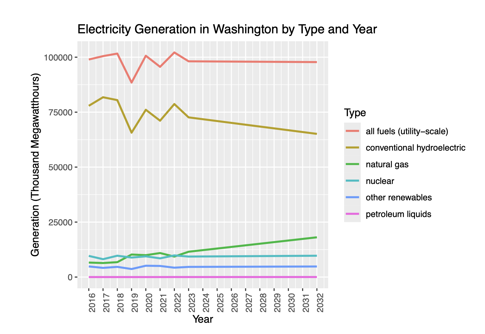
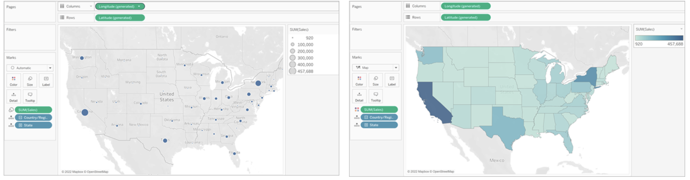
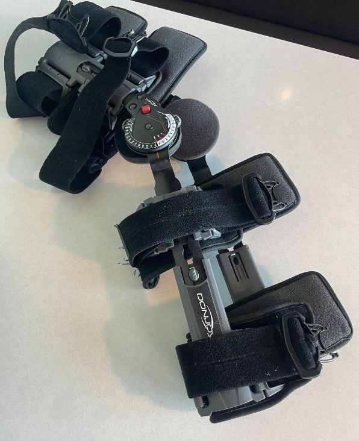
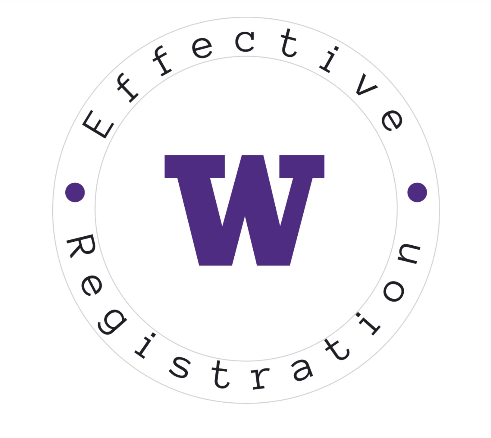

I am a dedicated student of economics and data science with a proven track record of
developing high-impact, data-driven solutions. Through roles such as Data Analyst
Intern at Internet Brands, I have honed my skills in optimizing SQL queries, developing
algorithms, and conducting exploratory data analysis to drive strategic pricing and market
decisions. My collaborative approach and problem-solving mindset enable me to uncover the
'how' and 'why' behind complex problems, delivering meaningful insights that empower organizations
to achieve measurable success. With proficiency in Python, SQL, Tableau, and advanced data analytics,
I am committed to leveraging my expertise to foster innovation and drive growth.
Education
University of Washington - Seattle | Aug. 2022 to June 2026
Bachelor of Science in Economics, Minor in Applied Math and Data Science
Relevant Coursework: Data Programming (Python), Core Methods of Data Science, Elements of Statistical Methods, Calculus-based Micro/Macro Economics

Detailed analytical project exploring the relationship between electricity generation and electric vehicle (EV) adoption in Washington state. The project includes statistical analysis, predictive modeling, and data visualization to forecast future trends in EV adoption relative to energy supply.
This project demonstrates my ability to apply data science techniques to tackle complex environmental challenges. I developed and cleaned datasets, implemented ARIMA forecasting in R, and created dual-axis plots to present findings effectively. By integrating energy and EV datasets, I provided actionable insights, highlighting the potential mismatch between energy supply and EV demand by 2032. This artifact showcases my technical proficiency (R, ggplot, forecasting), problem-solving skills, and ability to communicate data-driven insights visually and contextually. I include it here as evidence of my capacity to handle real-world data challenges with a strong environmental and societal impact focus.

This dashboard was created during my internship with Internet Brands to help account managers optimize ad market strategies. It integrates calls-per-dollar (CPD) data from Avvo and Martindale-Hubbell and features an interactive map for strategic market visualization.
This artifact illustrates my proficiency in data visualization and creating user-centric tools. I designed and implemented a Tableau dashboard that became a daily resource for account managers, driving upsell revenue and ensuring client retention. My responsibilities included data integration (SQL), Tableau dashboard creation, and real-time data updates. The outcome retained over $500,000 in annual revenue and helped guide strategic decision-making. I’m including this because it exemplifies my ability to translate complex data into actionable tools, directly impacting business outcomes.

This project showcases a user-centered analysis and redesign of the DonJoy X-ROM™ knee brace based on personal experience and feedback from the broader user community. The project identifies design flaws that hinder the device's usability and provides two detailed redesign proposals to address key issues: brace slippage and sharp plastic edges causing skin trauma.
This project highlights my ability to combine analytical thinking, user experience insights, and design proposals to solve real-world problems. Using a structured approach, I analyzed the perspectives of diverse stakeholders—including patients, healthcare professionals, insurance companies, and manufacturers—to ensure the solutions aligned with their needs.
Key contributions include:
Identifying specific design issues, such as brace slippage and plastic components causing injuries.
Developing two redesign proposals: non-slip grip pads to maintain brace position and rounded plastic edges to prevent skin damage.
Creating annotated sketches to visualize proposed solutions, supported by detailed stakeholder analyses and potential implementation challenges.

The Effective Registration project focuses on a collaborative project aimed at redesigning the University of Washingtons convoluted course registration process. As the product manager, my role was to oversee the team's progress, ensure deliverables met requirements, and contribute to creating a unified registration platform that integrates existing tools with new features. The project includes user research, wireframes, prototypes, and a consolidated solution proposal.
The Effective Registration project exemplifies my leadership and user-centric design capabilities. Collaborating with a multidisciplinary team, we addressed a widely recognized pain point for UW students. My contributions included: Leadership: As the product manager, I ensured timely submission of project components and kept the team aligned with project objectives. User Research: Coordinated interviews with stakeholders (students, parents, and advisors) to identify key pain points in the registration process, such as difficulty accessing class information and stress over major requirements. Solution Design: Led the conceptualization of a unified registration website, integrating tools like DawgPath and MyPlan while adding innovative features such as a syllabus archive, professor reviews, and an optimized degree audit system. Wireframes & Prototypes: Collaborated on low- and high-fidelity wireframes, ensuring the design aligned with user needs and was intuitive to navigate.